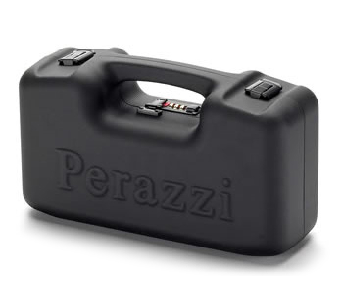
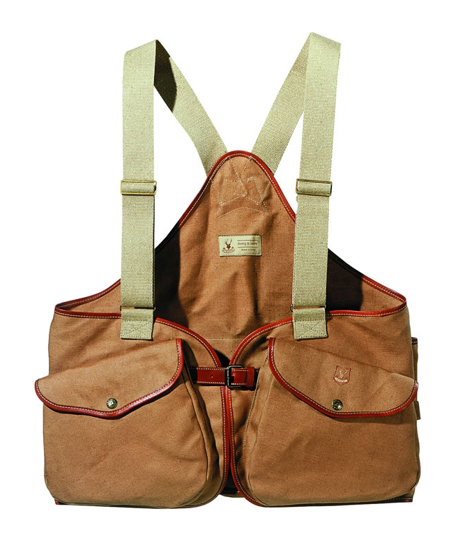

Русский охотникъ
Кейс для патронов 700 г (пустой)

На 100 патронов - 1500 рублей
На 125 патронов - 2100 рублей
На 150 патронов - 2700 рублей
Жилет охотничий с двумя нагрудными карманами, лён

Размер M - 2300 рублей
Размер L - 2700 рублей
Размер XL - 3300 рублей
Цвета: камуфляж, оранжевый, чёрный
Фонарь тактический Fenix LD75C Cree XM-L2 (U2)
 яркость до 4000 люмен
10 режимов работы
дополнительный диод RGB
дальность светового потока до 490 м
вес фонаря 430 г
материал корпуса — аэрокосмический алюминий
яркость до 4000 люмен
10 режимов работы
дополнительный диод RGB
дальность светового потока до 490 м
вес фонаря 430 г
материал корпуса — аэрокосмический алюминий